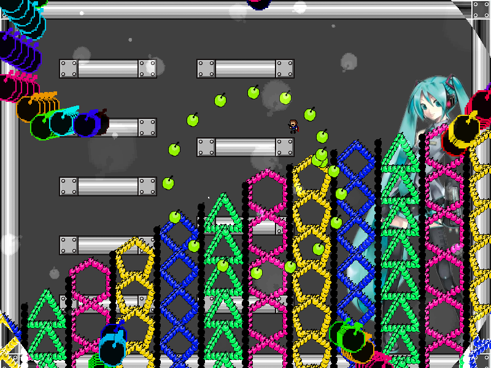
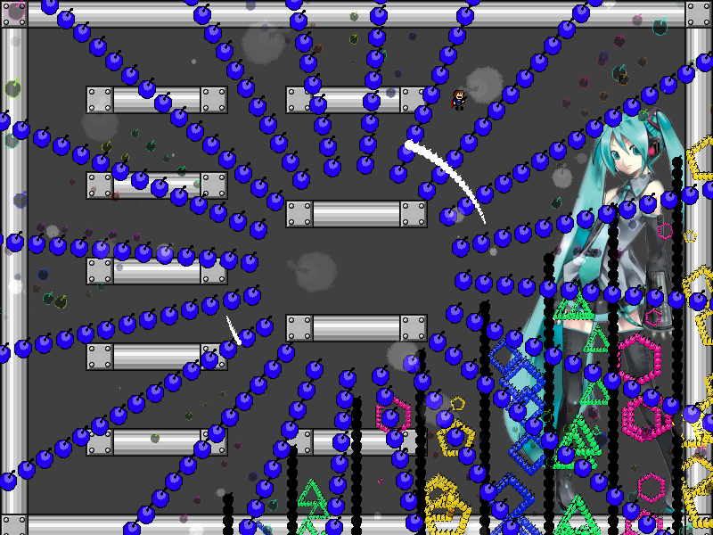

chapter8 - section4

| creator | segment | label | jump |
|---|---|---|---|
| NN | 1:47.30~1:48.80 | P | double |
角度のみがランダムな弾幕です。
画面中央を中心として生成される虹色の円形弾幕に関して、1:47.70~1:48.60で自機狙い弾幕として形状が歪んでいる（fig.8-4.1.a）間に、1:48.60における発射角度（fig.8-4.1.b）を判断することを目的としています。


また、1:48.00以降画面中央を中心として生成される白色の円弧状弾幕（fig.8-4.2）については、初期角度および半径が1:47.70におけるプレイヤーの位置を基準として決定されます。
拍子に合わせた4回の最大ジャンプを繰り出すことによって攻略がしやすくなるかもしれません。